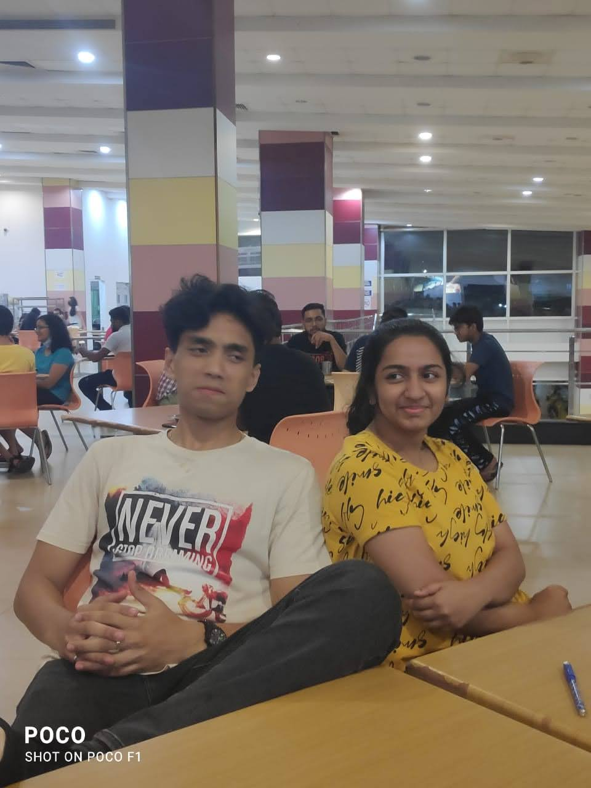
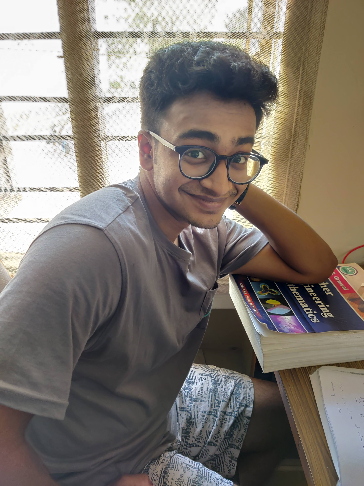
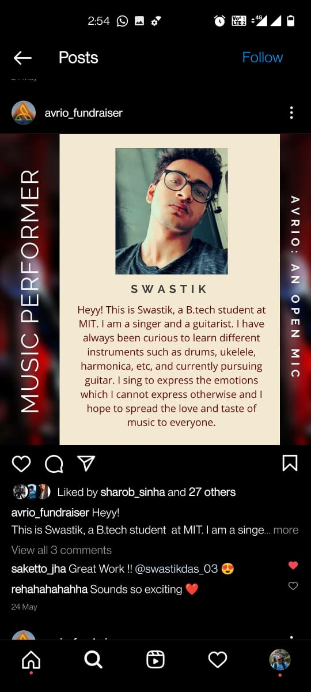
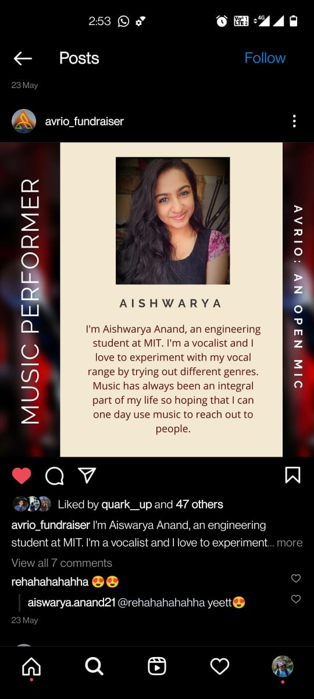
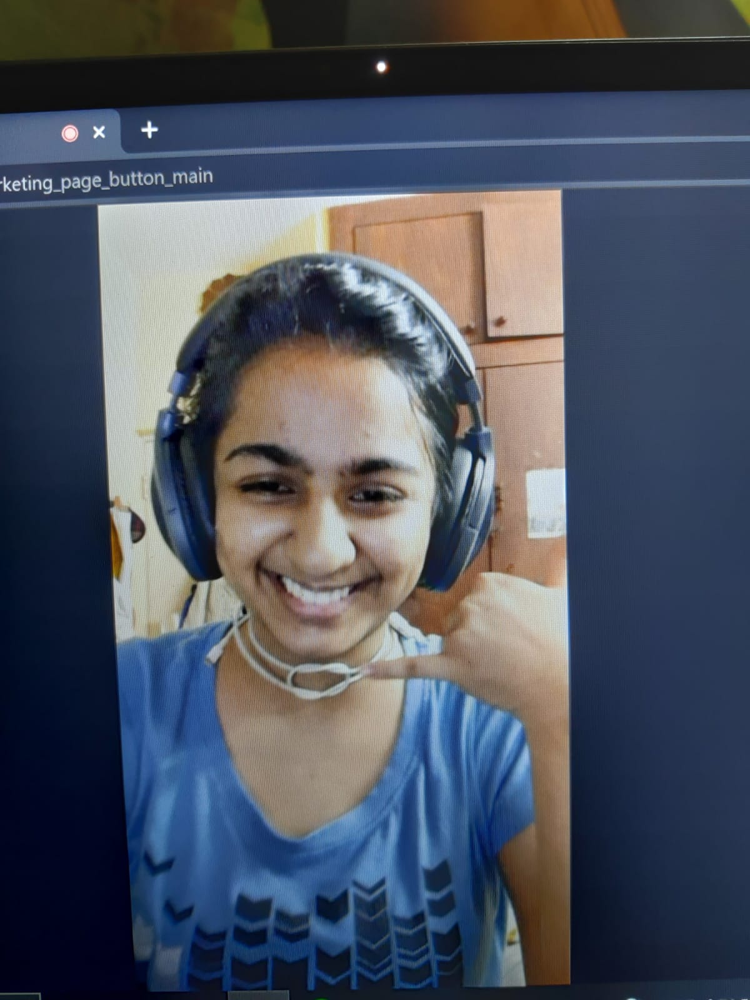
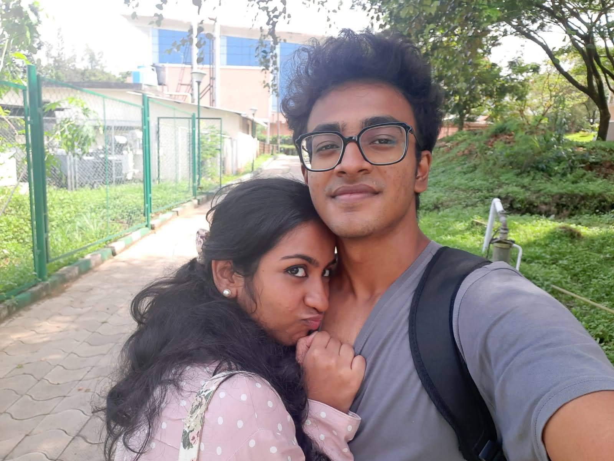

There lived a prince who was an extrovert for the entire world but deep inside he never used to get satisfied and truly do what he ever wanted to do. One day he went for a hunt in the mountains, while hunting he got distracted by the beauty lied in those mountains, the trees, the air, the snow, each and every element he saw on those mountains and he just started to fall in love with everything he saw. Then he saw this mountain from where he hadvheard that he could witness 7 peaks. He started climbing that mountain, day by day resting in the nights, experiencing the level of coldness he has never experienced in his life, the discomfort and all the other barriers. But finally after reaching the peak, after witnessing that, he shed tears, he knew at that moment that he had never experienced this feeling before and he called this feeling “Love”. Until then he did not what love was, neither did he feel this towards anyone? He also had some of his personal problems and had thought himself as emotionless. He could not associate this feeling to any person after a few failures so he had stopped giving that importance or the feeling of love to anyone anymore.
In the neighbouring kingdom, there lived a princess who was an ambivert, sweet, innocent, paavam in front of her royal family but a beast in real life. The princess had experienced so much in her life, she had the voice of an angel, took up singing lessons, sang at royal functions and many other places. She loves to discuss social matters and implement changes. In her life until then, she also had experienced ups and downs in her life. During those personal problems, she had found a friend in her own kingdom with whom she started to share these things and later on they became partners. Because of some problems they faced, they got separated. After falling apart, she was devastated. She had always thought how they had fallen apart and had thought of not getting involved in such a partnership ever again. She had disoriented herself from certain feelings and also started to question herself in a certain way which was unhealthy for her. Concluding, she also thought that she could never love anyone like this ever again.

There was another kingdom where the princes and the princesses used to go to learn skill sets required to survive on this planet. Since both of the the above -mentioned prince and the princess were of the same age, they had gone to the same educationary kingdom. In the first month, both of them had their own lifestyle, crossed paths several times but never interacted with each other.
 After a few months, the kingdom hosted a musical show where anyone could come and perform. Since the princess was musically inclined, she was going to perform in that. In those few months, the prince too had found the courage to take up music publically, and hence decided to take part in the show. During the rehearsals, the prince and the princess were made a part of the same group. The prince did not have any prior experience of performing so he was kind of stressed. He thought that he should make this first performance special and hence thought of observing the princess. For days, he observed the princess silently, listening to her while practice, looking at her between sessions, etc. Also, he asked his maid to look upon her previous performances and after she told him that the princess sang like a koel bird, he was excited to listen to her sing in person and had thought to ask her for help. One night, while the princess was heading back to her palace, the prince confidently walked towards her and gave a royal description about himself. Being a narcissist, he boasted too much about him and then asked her for a small help. The princess was feeling awkwardness but then asked him what he wanted help with. He explained that this is his first performance and he wanted this performance to be special so he wanted some help with what he should sing and also correct him in his mistakes. She agreed and asked him to meet him at 6 in the evening the next day.
 That night the prince practised very much because he did not want to feel embarrassed in front of her. The following day he leaves to meet her, he asks her to perform first and she sings this song called as “Chandliyee”, “la laal” and “agar mai aapka hota toh”. He was stunned. It was so soothing and melodious that he did not have words to describe that. After singing, the princess asks the prince to sing. The prince sang with every bit of emotions which the song depicted and that turned out to be good too. Then, the princess gave him some insights and told him his mistakes. For the next few days, regularly they met and they used to practise singing. During this, both of them started to connect with each other and began to become friends.
On the day of performance, both of them performed exceptionally well. After the performance, the prince greeted the princess and asked her if she wanted to just talk in the night. Princess agreed and that night both of them had a great talk. The following days, they both used to meet regularly and used to talk to each other, make each other laugh, talk about their music taste,etc. Slowly they became great friends. After their sessions was over, Both of them left to their respective kingdoms, But they used to send out messages through pigeons regularly. But they did want to meet each other .
Months had gone by and they hadn’t met each other. Both missed each other a lot but they had continued their conversations through messages. The princess decided that she would go visit him in his kingdom and had written him the message about the same. The prince was extremely happy about it and excited to see her. The princess had come in her carriage wearing an astonishing purple coloured dress. The prince was amazed by her beauty. He took her on his horse carriage and they left for the palace. Both of them had fun during the journey, they laughed, shared stories. After they reached the palace, the prince took her to his favourite dessert place and gave her one of his favourite dishes. Both of them enjoyed that day. The following day the prince took her to a nearby lake and had deep conversations, fooled around and he took her all over the kingdom. In the night, they both went to a festival party where people from different cultures had come. The prince and the princess was having a great time but suddenly, a wild bear entered the scene. The prince had gone away for a while and the princess was alone. The wild bear looked at the princess and started to approach her with anger. The prince spotted that and ran towards her as fast as he could and faced the bear. With the help of a fire wood, he chased the bear away.The princess hugged the prince because of fear. Suddenly, clouds circled around them and then it started to rain heavily. But they did not move away, they continued hugging each other in the rain.
That’s the first time they realized how important they were to each other. The next day, the princess had to leave. The prince was sad but he did not say it to her. While the princess was getting on her carriage, he hugged her and said goodbye and said that he will miss her. The prince followed her carriage for a while on his horse until the border came and then he went back. On the way back, he realised how important she was to him but he was also scared to make her important because of his past.
Few days passed, The time to hunt in the mountains had come, and the prince wrote her a goodbye message for the princess. During his travel, he felt different. He knew that this time the mountains weren’t the only important thing in his life. The princess too was. He realized that maybe he is believing in love again. The day he was back, he received 48 messages from the princess which explained what she did every day and how she missed him. That feeling got confirmed. The prince wanted to tell her that “He loves her but there were still some things he had to confirm first. Day after day, those barriers went away and he was closer to confessing his feelings. The educationary kingdom re-opened
Morning: 9:15
The prince arrived.
The princess was waiting for him outside his palace.
Both of them looked at each other.
Both of their eyes were locked.
Both came closer.
Closer and closer..
Eyes still locked.
The prince hugged her tightly and slowly whispered in her eyes:”I LOVE YOU”
The princess looked at him and told that she loves him too.
They both realized that whetever emotions they had lost because of their past, they were slowly experiencing them back.
They realized that they loved each other a lot and they both made each other stuffs which they never had felt before.
Never have I ever loved anyone this much before...
